gi2020
Genome Informatics Conference 2020
Last built: 2020-09-14 15:10:28
| Parameter | Value |
|---|---|
| hashtag | #gi2020 |
| start_day | 2020-09-14 |
| end_day | 2020-09-16 |
| timezone | Europe/London |
| theme | theme_light |
| accent | #e75152 |
| accent2 | #F3A8A8 |
| kcore | 2 |
| topics_k | 6 |
| bigram_filter | 3 |
| fixed | FALSE |
| seed | 1 |
Introduction
An analysis of tweets for the query #gi2020 related to Genome Informatics Conference 2020 from 2020-09-14 to 2020-09-16 (online due to the COVID-19 pandemic).
A total of 96 tweets from 64 users were collected using the {rtweet} R package.
1 Timeline
1.1 Tweets by day
1.2 Tweets by day and time
Filtered for dates 2020-09-14 - 2020-09-16 in the Europe/London timezone.
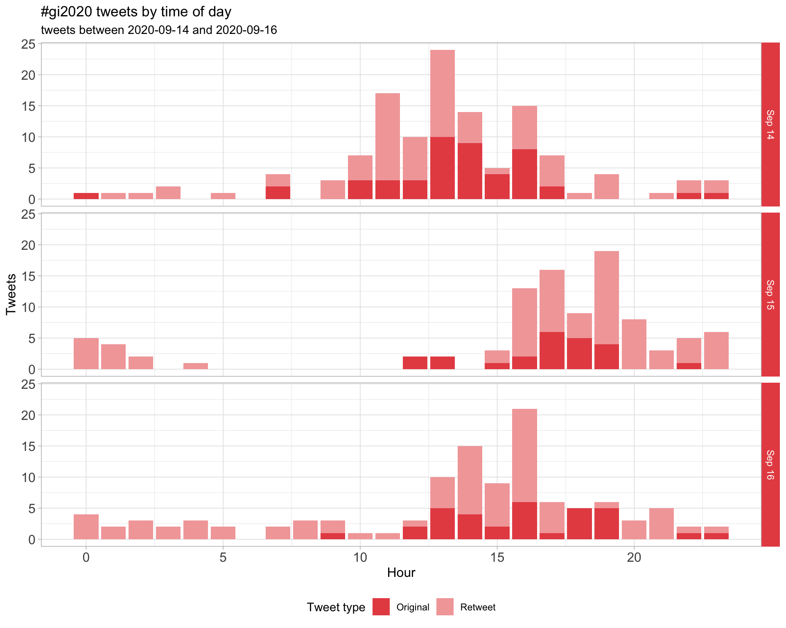
2 Users
2.1 Top tweeters
Overall

Original
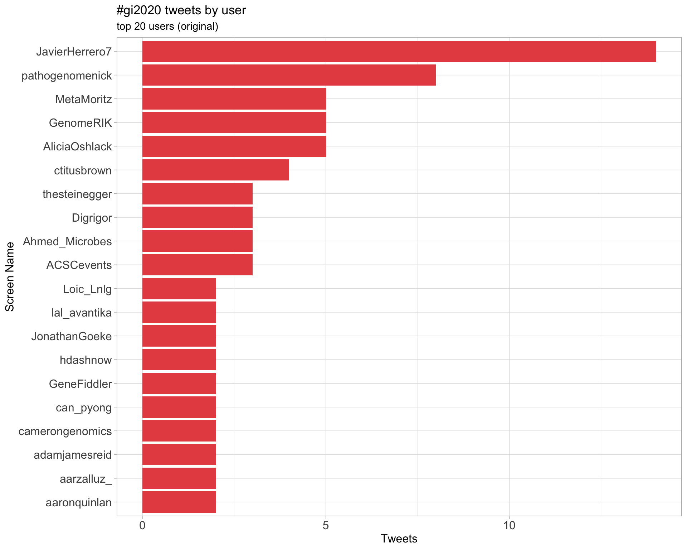
Retweets
2.2 Retweet proportion

2.3 Top tweeters timeline
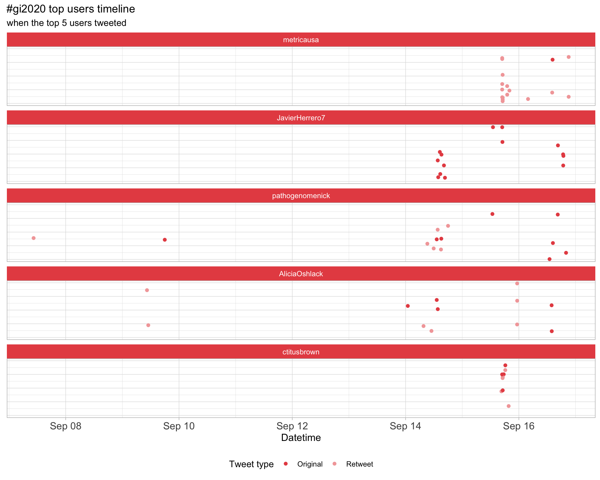
2.4 Top tweeters by day
Overall
Day 1
Day 2
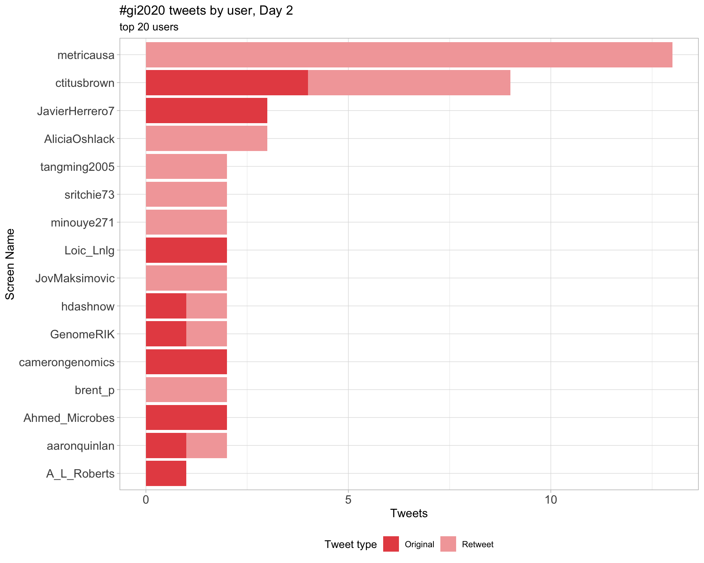
Day 3
Original
Day 1
Day 2
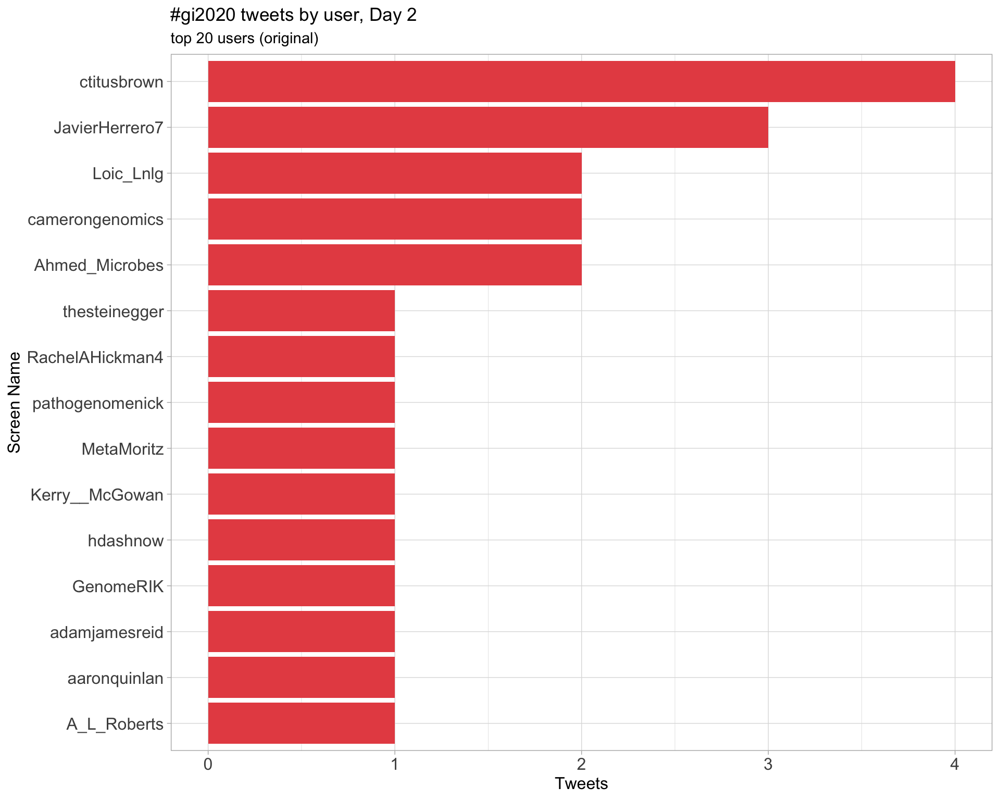
Day 3
Retweets
Day 1
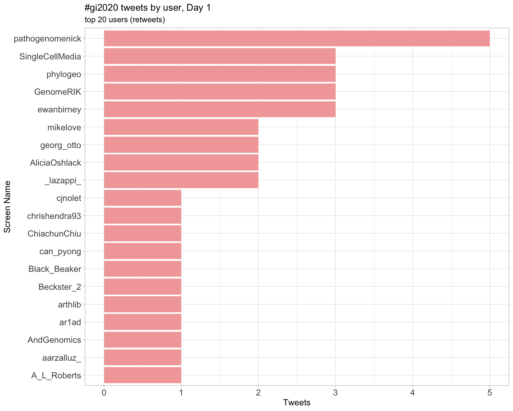
Day 2
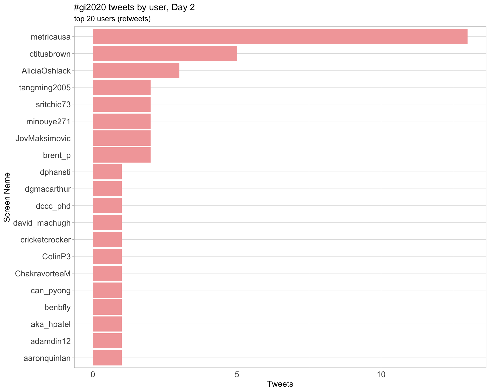
Day 3

3 Sources
Users
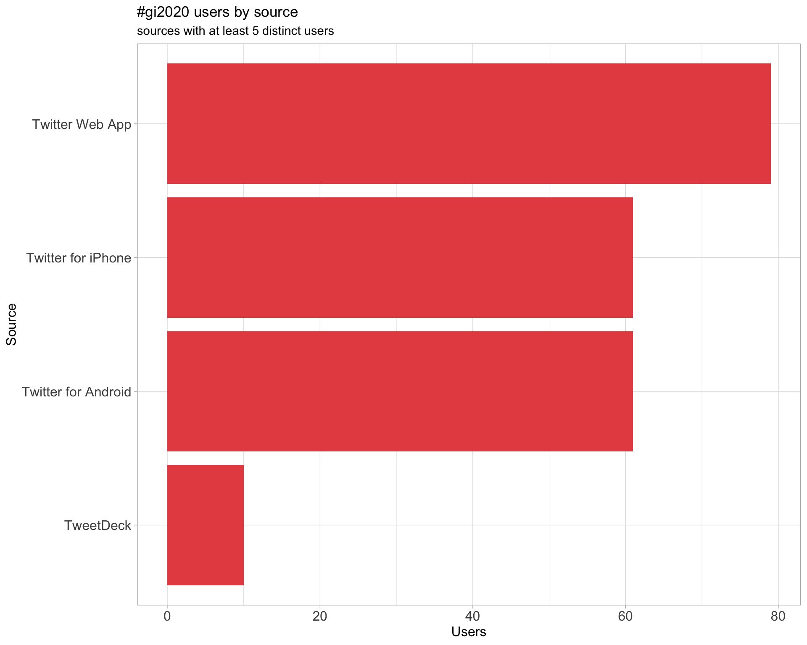
Tweets
4 Networks
4.1 Replies
The “replies network”, composed from users who reply directly to one another, coloured by PageRank.
4.2 Mentions
The “mentions network”, where users mention other users in their tweets. Filtered for a k-core of 2. Node colour and size adjusted according to PageRank score.
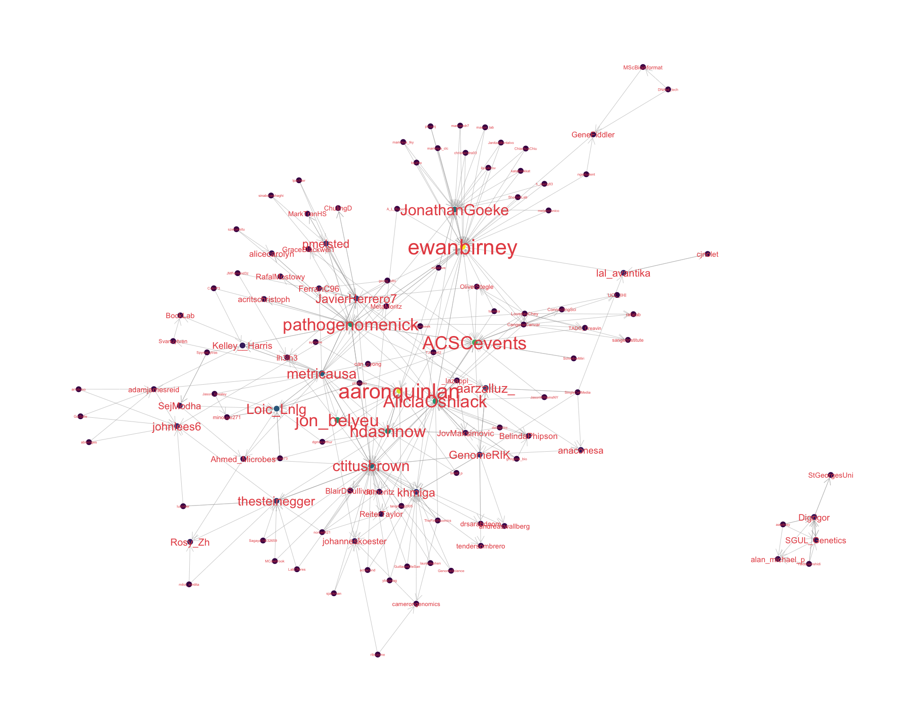
5 Tweet types
5.1 Retweets
Proportion
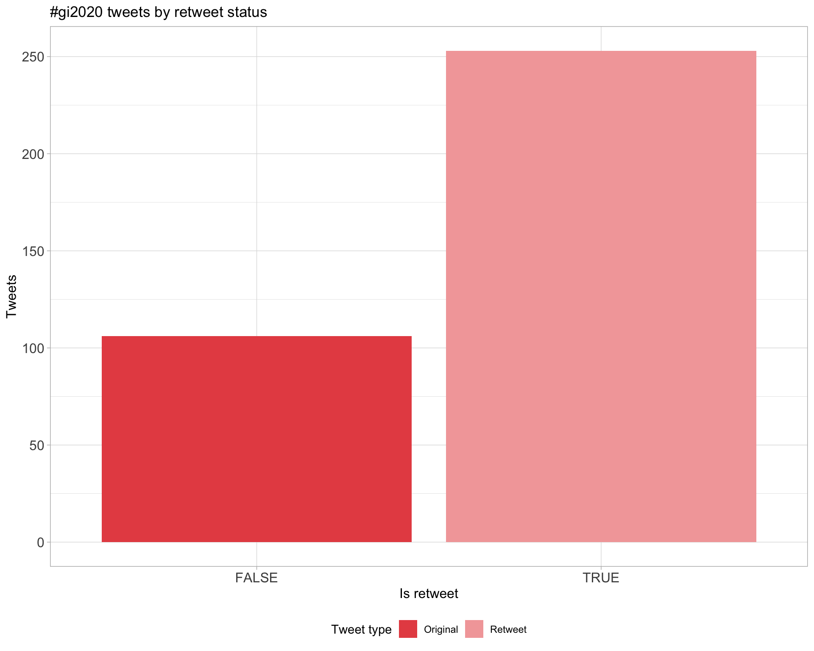
Count
Top 10
| screen_name | text | retweet_count |
|---|---|---|
| ACSCevents |
#GI2020 starts today! We‚Äôre celebrating 20 years of Genome Informatics this week with over 350 participants from 42 countries. Please use the hashtag #GI2020 when discussing highlights from the meeting. Here‚Äôs a throwback of our 2001 #GenomeInformatics abstract booküëá https://t.co/NL9YQiwZ5n |
15 |
| AliciaOshlack |
#GI2020 starts today. This is our 20th Genome Informatics meeting. What were you doing in 2001? I was working on my PhD in astrophysics on the central structure of quasars. I‚Äôm pretty sure I had no real concept of the genome ü§ì |
14 |
| pathogenomenick | The full Genome Informatics 2020 programme is now up, looking like a very tasty agenda indeed. About to do our technical rehearsal which I assume means loading up Zoom. #gi2020 https://t.co/yAzofXKTCH | 11 |
| ACSCevents |
üö®FINAL CALL! Register for #GI2020 now: https://t.co/TvNUnkHKKZ Bringing researchers together to: ‚úÖDiscuss recent advances ‚úÖFocus on approaches incl.¬†variant-calling, #transcriptomic analysis & variant interpretation ‚úÖNetwork online üìÑ AGENDA: https://t.co/MMmmGEeDeM https://t.co/8Ho3nH6Hj2 |
9 |
| aarzalluz_ | Excited to present my work today at Genome Informatics #GI2020 -tune in for some single-cell isoform fun! Great line up of speakers at the transcriptomics session this afternoon üëáüèº https://t.co/EyD72r7RbD | 6 |
| JonathanGoeke | There is a whole world of RNA modifications to be explored @ewanbirney at #GI2020. Have a look at the poster by Christopher Hendra on m6aNet to predict RNA modifications from a single sample of direct RNA-Seq, code here: https://t.co/Yuj12paUh7 | 5 |
| GenomeRIK | #GI2020 #TAMAtools For anyone interested I have a poster for today’s session “P56 - Identifying novel genes in the human genome using TAMA long read RNA sequencing analysis”. It’s a bit short but I’ll be available for any TAMA questions during the poster session. | 2 |
| GenomeRIK | #GI2020 Genome Informatics starts today! Starting it right with transcriptomics. Looking forward to @aarzalluz_ @anaconesa talk on neural single cell isoform expression! https://t.co/L0MUH2iXL6 | 2 |
| JavierHerrero7 |
Smita Krishnaswamy talking about PHATE (https://t.co/mBPn2GNjBs), applied to COVID-19 data Incidentally, @FerranC96 presented the PHATE mss at our BLIC journal club last week. #GI2020 |
1 |
| AliciaOshlack | Check out poster 26 from my group in session 1 at #GI2020. You wont be disappointed | 1 |
Most retweeted
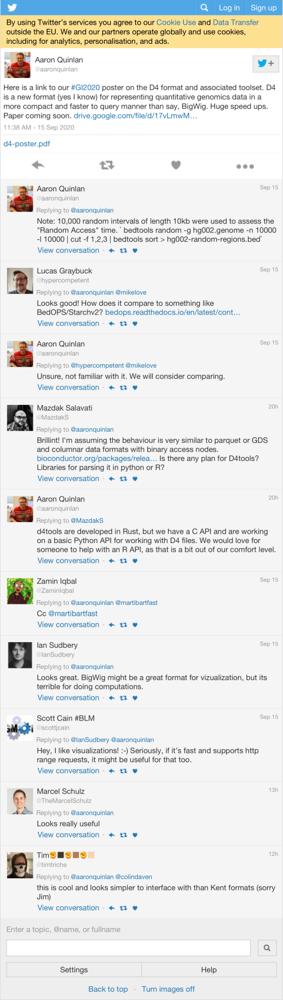
5.2 Likes
Proportion
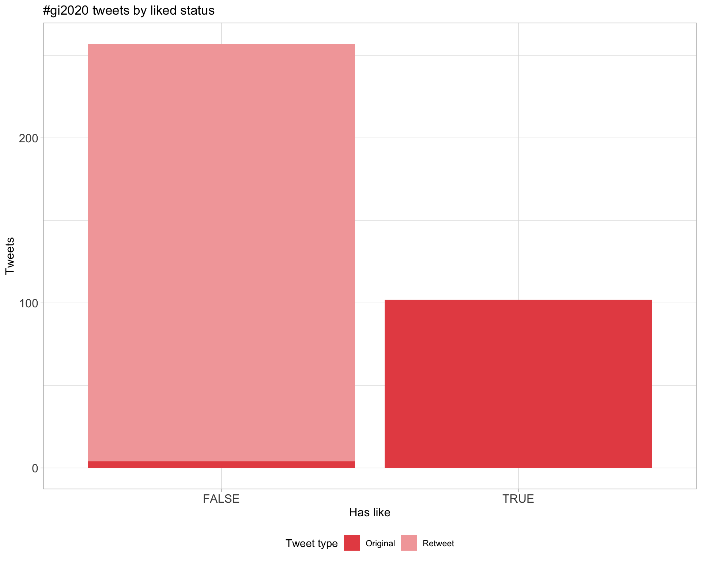
Count

Top 10
| screen_name | text | favorite_count |
|---|---|---|
| AliciaOshlack |
#GI2020 starts today. This is our 20th Genome Informatics meeting. What were you doing in 2001? I was working on my PhD in astrophysics on the central structure of quasars. I‚Äôm pretty sure I had no real concept of the genome ü§ì |
115 |
| pathogenomenick | The full Genome Informatics 2020 programme is now up, looking like a very tasty agenda indeed. About to do our technical rehearsal which I assume means loading up Zoom. #gi2020 https://t.co/yAzofXKTCH | 38 |
| ACSCevents |
#GI2020 starts today! We‚Äôre celebrating 20 years of Genome Informatics this week with over 350 participants from 42 countries. Please use the hashtag #GI2020 when discussing highlights from the meeting. Here‚Äôs a throwback of our 2001 #GenomeInformatics abstract booküëá https://t.co/NL9YQiwZ5n |
36 |
| lachlanjmc | Starting to get excited about my first genome informatics conference since 2004! #GI2020 | 25 |
| pathogenomenick | Conference chairing, post-COVID edition! Listening to @ewanbirney keynote defining genome informatics. Sadly missed the photo of his early century crew cut. #GI2020 https://t.co/ZXyeDjpx9q | 18 |
| aarzalluz_ | Excited to present my work today at Genome Informatics #GI2020 -tune in for some single-cell isoform fun! Great line up of speakers at the transcriptomics session this afternoon üëáüèº https://t.co/EyD72r7RbD | 11 |
| JonathanGoeke | There is a whole world of RNA modifications to be explored @ewanbirney at #GI2020. Have a look at the poster by Christopher Hendra on m6aNet to predict RNA modifications from a single sample of direct RNA-Seq, code here: https://t.co/Yuj12paUh7 | 11 |
| aarzalluz_ | I was 7 years old, had not even started to learn English and was nowhere near knowing what DNA was üôà Kind of amazing to think that today I‚Äôll be presenting at #GI2020, first Genome Informatics meeting for me (hopefully, with many more to come). https://t.co/vD2i4cLli3 | 6 |
| ACSCevents |
üö®FINAL CALL! Register for #GI2020 now: https://t.co/TvNUnkHKKZ Bringing researchers together to: ‚úÖDiscuss recent advances ‚úÖFocus on approaches incl.¬†variant-calling, #transcriptomic analysis & variant interpretation ‚úÖNetwork online üìÑ AGENDA: https://t.co/MMmmGEeDeM https://t.co/8Ho3nH6Hj2 |
6 |
| AliciaOshlack | Wonderful to have @ewanbirney kicking off #GI2020 with an historical perspective of Genome Informatics | 5 |
Most likes
5.3 Quotes
Proportion
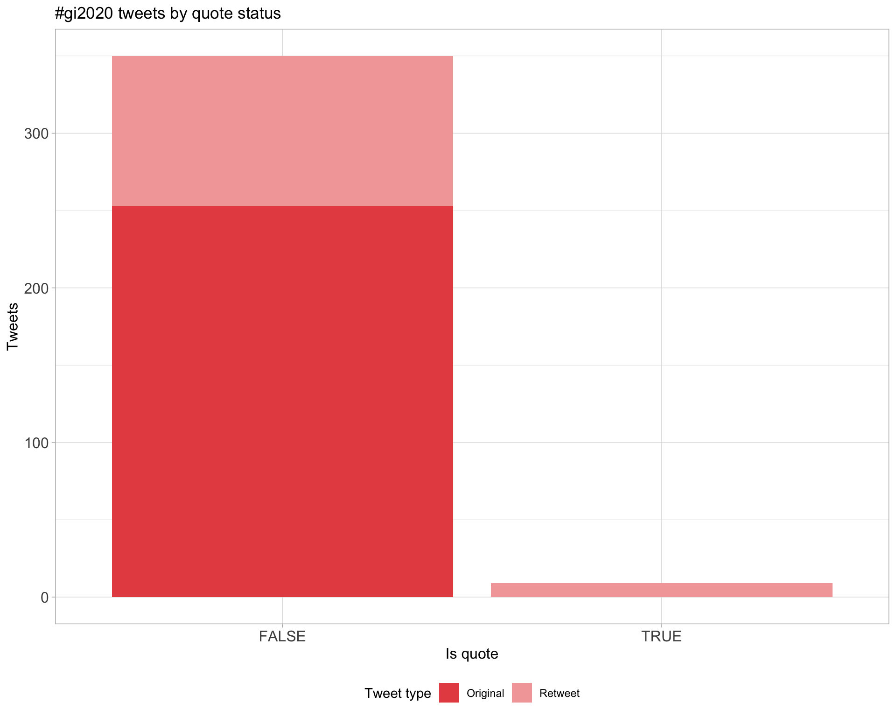
Count
Top 10
| screen_name | text | quote_count |
|---|---|---|
| aarzalluz_ | I was 7 years old, had not even started to learn English and was nowhere near knowing what DNA was üôà Kind of amazing to think that today I‚Äôll be presenting at #GI2020, first Genome Informatics meeting for me (hopefully, with many more to come). https://t.co/vD2i4cLli3 | 2 |
| JoanaFFPViana |
In a more positive tweet, I‚Äôm really looking forward to #GI2020. The programme looks so good! PS: I was 12 in 2001 üò¨ https://t.co/MR2F4w6d3o |
2 |
| minouye271 | Be sure to check out Youwen (Owen) Qin‚Äôs talk at #GI2020 Wed (16th) at 130pm UK. The preprint‚Äôs just gone up! üëá https://t.co/JzvaYuLSBP | 1 |
| MScBioinformat | #GI2020 - a very useful hashtag to watch for the next 4 days #genome #informatics #bioinformatics . Thanks @GeneFiddler ! https://t.co/VZl0Q8Gnsz | 1 |
Most quoted
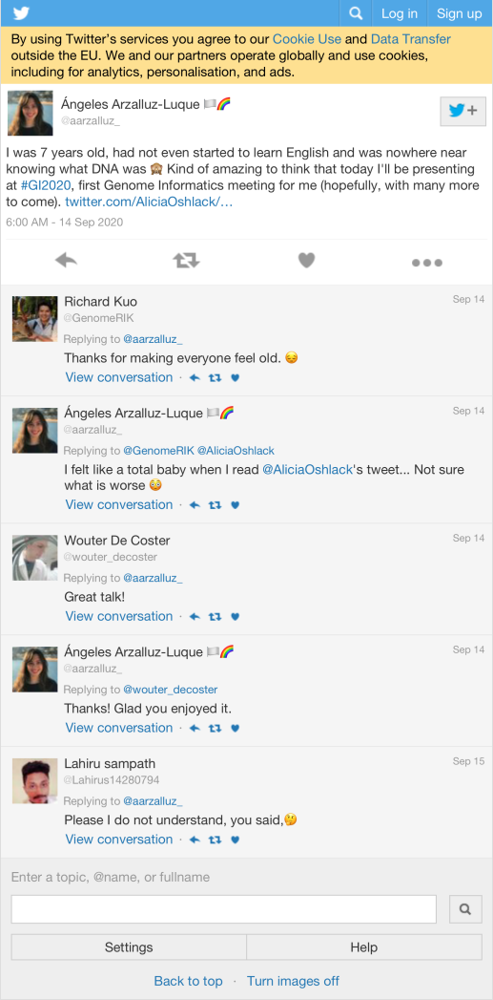
6 Media
Proportion
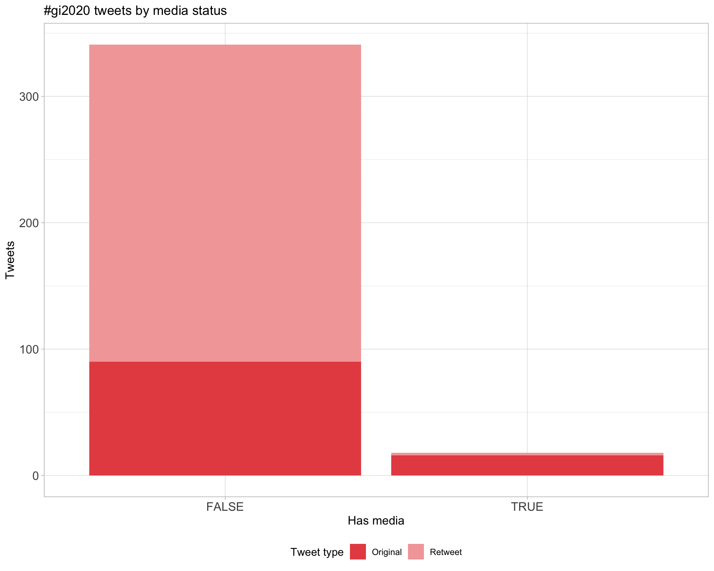
Top 10
| screen_name | text | favorite_count |
|---|---|---|
| ACSCevents |
#GI2020 starts today! We‚Äôre celebrating 20 years of Genome Informatics this week with over 350 participants from 42 countries. Please use the hashtag #GI2020 when discussing highlights from the meeting. Here‚Äôs a throwback of our 2001 #GenomeInformatics abstract booküëá https://t.co/NL9YQiwZ5n |
36 |
| pathogenomenick | Conference chairing, post-COVID edition! Listening to @ewanbirney keynote defining genome informatics. Sadly missed the photo of his early century crew cut. #GI2020 https://t.co/ZXyeDjpx9q | 18 |
| aarzalluz_ | Excited to present my work today at Genome Informatics #GI2020 -tune in for some single-cell isoform fun! Great line up of speakers at the transcriptomics session this afternoon üëáüèº https://t.co/EyD72r7RbD | 11 |
| ACSCevents |
üö®FINAL CALL! Register for #GI2020 now: https://t.co/TvNUnkHKKZ Bringing researchers together to: ‚úÖDiscuss recent advances ‚úÖFocus on approaches incl.¬†variant-calling, #transcriptomic analysis & variant interpretation ‚úÖNetwork online üìÑ AGENDA: https://t.co/MMmmGEeDeM https://t.co/8Ho3nH6Hj2 |
6 |
| GenomeRIK | #GI2020 Genome Informatics starts today! Starting it right with transcriptomics. Looking forward to @aarzalluz_ @anaconesa talk on neural single cell isoform expression! https://t.co/L0MUH2iXL6 | 5 |
6.1 Most liked image

7 Tweet text
7.1 Word cloud
The top 100 words used 3 or more times.
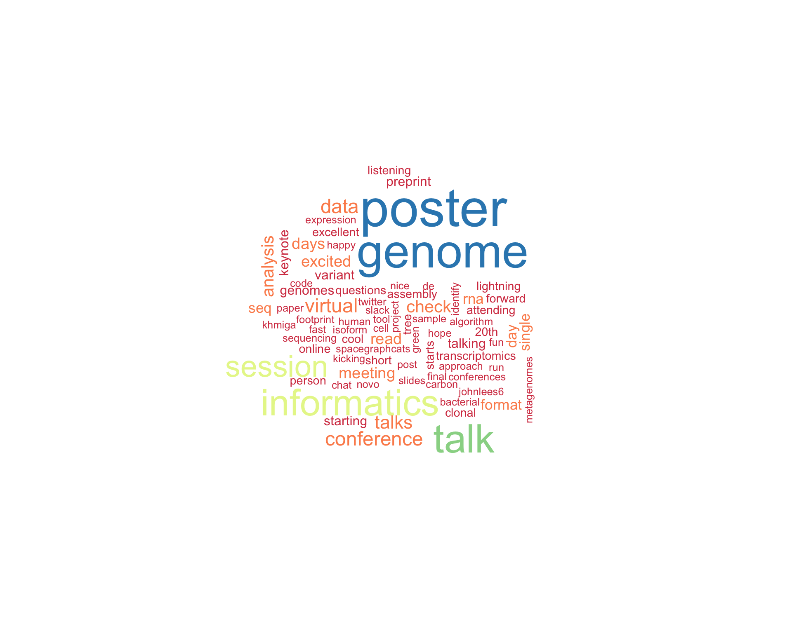
7.3 Emojis
7.4 Bigram graph
Words that were tweeted next to each other at least 3 times.
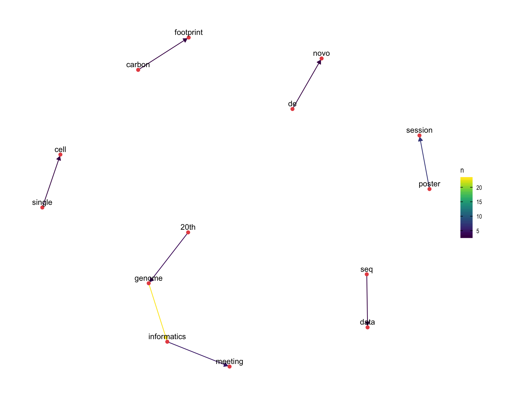
7.5 Topic modelling
Top 10 words associated with 6 topics identified by LDA.
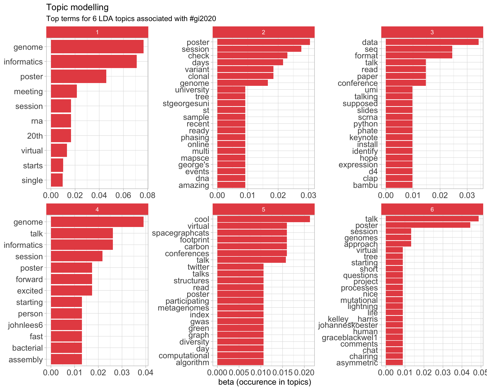
7.5.1 Representative tweets
Most representative tweets for each topic
Topic 1
| screen_name | text | gamma |
|---|---|---|
| ACSCevents |
üö®FINAL CALL! Register for #GI2020 now: https://t.co/TvNUnkHKKZ Bringing researchers together to: ‚úÖDiscuss recent advances ‚úÖFocus on approaches incl.¬†variant-calling, #transcriptomic analysis & variant interpretation ‚úÖNetwork online üìÑ AGENDA: https://t.co/MMmmGEeDeM https://t.co/8Ho3nH6Hj2 |
0.9977289 |
| JonathanGoeke | There is a whole world of RNA modifications to be explored @ewanbirney at #GI2020. Have a look at the poster by Christopher Hendra on m6aNet to predict RNA modifications from a single sample of direct RNA-Seq, code here: https://t.co/Yuj12paUh7 | 0.9971002 |
Topic 2
| screen_name | text | gamma |
|---|---|---|
| JavierHerrero7 |
Attending my first virtual meeting today. #GI2020 started with @ewanbirney’s keynote address. Finding weird not to clap at the end of the talk… (would find even weirder to clap while seating alone at my dinning table) |
0.9967391 |
| JavierHerrero7 |
Smita Krishnaswamy talking about PHATE (https://t.co/mBPn2GNjBs), applied to COVID-19 data Incidentally, @FerranC96 presented the PHATE mss at our BLIC journal club last week. #GI2020 |
0.9965226 |
| AliciaOshlack |
#GI2020 starts today. This is our 20th Genome Informatics meeting. What were you doing in 2001? I was working on my PhD in astrophysics on the central structure of quasars. I‚Äôm pretty sure I had no real concept of the genome ü§ì |
0.9965226 |
| MetaMoritz | Hanging-out awkwardly at conference coffee break where you know no one has become way less awkward at an online event! I am curious how this will work #GI2020 #geeksinthereelement #covidlife | 0.9952653 |
| MScBioinformat | #GI2020 - a very useful hashtag to watch for the next 4 days #genome #informatics #bioinformatics . Thanks @GeneFiddler ! https://t.co/VZl0Q8Gnsz | 0.9925839 |
| danilotat | @AliciaOshlack Probably first days at school, I was 6 years old.. üòÖ Now attending #GI2020 , my first GI (thanks to online sessions) | 0.9913607 |
Topic 3
| screen_name | text | gamma |
|---|---|---|
| pathogenomenick | Conference chairing, post-COVID edition! Listening to @ewanbirney keynote defining genome informatics. Sadly missed the photo of his early century crew cut. #GI2020 https://t.co/ZXyeDjpx9q | 0.9969302 |
| GenomeRIK | #GI2020 Genome Informatics starts today! Starting it right with transcriptomics. Looking forward to @aarzalluz_ @anaconesa talk on neural single cell isoform expression! https://t.co/L0MUH2iXL6 | 0.9962754 |
| pathogenomenick | The full Genome Informatics 2020 programme is now up, looking like a very tasty agenda indeed. About to do our technical rehearsal which I assume means loading up Zoom. #gi2020 https://t.co/yAzofXKTCH | 0.9956578 |
| MetaMoritz | I know python, I know R. I do identify to this definition of #datasciences from @ewanbirney keynote at #GI2020 ! | 0.9896543 |
| MetaMoritz | I really appreciate @ewanbirney ’s message of openness in his keynote at #GI2020! | 0.9828986 |
Topic 4
| screen_name | text | gamma |
|---|---|---|
| ACSCevents |
#GI2020 starts today! We‚Äôre celebrating 20 years of Genome Informatics this week with over 350 participants from 42 countries. Please use the hashtag #GI2020 when discussing highlights from the meeting. Here‚Äôs a throwback of our 2001 #GenomeInformatics abstract booküëá https://t.co/NL9YQiwZ5n |
0.9969302 |
| lal_avantika | Excellent start to #GI2020 with @ewanbirney’s keynote followed by Smita Krishnaswamy. Now listening to my own recorded talk being played and feeling incredibly weird. Anyone else know this feeling? #VirtualConference | 0.9965226 |
| gerlach_d | The virtual 20th Genome Informatics meeting #GI2020 will start in a few hours - the program can be found here https://t.co/4kH0IPjWzz | 0.9947948 |
Topic 5
| screen_name | text | gamma |
|---|---|---|
| GenomeRIK | #GI2020 @krsahlin What are your thoughts on NanoSplicer? Is this similar in use case as Ultra? Genome Informatics poster P127 - Accurate identification of mRNA splice sites using Oxford Nanopore sequencing | 0.9967391 |
| aarzalluz_ | Excited to present my work today at Genome Informatics #GI2020 -tune in for some single-cell isoform fun! Great line up of speakers at the transcriptomics session this afternoon üëáüèº https://t.co/EyD72r7RbD | 0.9962754 |
| GeneFiddler |
So #GI2020 (Genome Informatics 2020) is about to kick off with the mighty @ewanbirney Strap in, hold tight and enjoy the ride! |
0.9942205 |
| theresa_wacker | Excited to attend the Genome Informatics Conference today and present my poster tomorrow! #Gi2020 | 0.9925839 |
| AliciaOshlack | Wonderful to have @ewanbirney kicking off #GI2020 with an historical perspective of Genome Informatics | 0.9913607 |
| lachlanjmc | Starting to get excited about my first genome informatics conference since 2004! #GI2020 | 0.9896543 |
Topic 6
| screen_name | text | gamma |
|---|---|---|
| GenomeRIK | #GI2020 #TAMAtools For anyone interested I have a poster for today’s session “P56 - Identifying novel genes in the human genome using TAMA long read RNA sequencing analysis”. It’s a bit short but I’ll be available for any TAMA questions during the poster session. | 0.9973893 |
| minouye271 | Be sure to check out Youwen (Owen) Qin‚Äôs talk at #GI2020 Wed (16th) at 130pm UK. The preprint‚Äôs just gone up! üëá https://t.co/JzvaYuLSBP | 0.9952653 |
| aarzalluz_ | I was 7 years old, had not even started to learn English and was nowhere near knowing what DNA was üôà Kind of amazing to think that today I‚Äôll be presenting at #GI2020, first Genome Informatics meeting for me (hopefully, with many more to come). https://t.co/vD2i4cLli3 | 0.9947948 |
| JoanaFFPViana |
In a more positive tweet, I‚Äôm really looking forward to #GI2020. The programme looks so good! PS: I was 12 in 2001 üò¨ https://t.co/MR2F4w6d3o |
0.9913607 |
| AliciaOshlack | Check out poster 26 from my group in session 1 at #GI2020. You wont be disappointed | 0.9896543 |
8 Links
Links to GitHub, GitLab, BitBucket, Bioconductor or CRAN mentioned in Tweets.
| Name | Tweets | Retweets | Type | Link |
|---|---|---|---|---|
| m6anet | 1 | 0 | GitHub | goekelab/m6anet |
Session info
## R version 4.0.0 (2020-04-24)
## Platform: x86_64-apple-darwin17.0 (64-bit)
## Running under: macOS Catalina 10.15.6
##
## Matrix products: default
## BLAS: /Library/Frameworks/R.framework/Versions/4.0/Resources/lib/libRblas.dylib
## LAPACK: /Library/Frameworks/R.framework/Versions/4.0/Resources/lib/libRlapack.dylib
##
## locale:
## [1] en_US.UTF-8/en_US.UTF-8/en_US.UTF-8/C/en_US.UTF-8/en_US.UTF-8
##
## attached base packages:
## [1] stats graphics grDevices utils datasets methods base
##
## other attached packages:
## [1] fs_1.5.0 here_0.1 kableExtra_1.2.1 knitr_1.29
## [5] magick_2.4.0 webshot_0.5.2 viridis_0.5.1 viridisLite_0.3.0
## [9] wordcloud_2.6 RColorBrewer_1.1-2 ggtext_0.1.0 ggraph_2.0.3
## [13] ggrepel_0.8.2 ggplot2_3.3.2 emo_0.0.0.9000 rvest_0.3.6
## [17] xml2_1.3.2 topicmodels_0.2-11 tidytext_0.2.5 igraph_1.2.5
## [21] stringr_1.4.0 purrr_0.3.4 forcats_0.5.0 lubridate_1.7.9
## [25] tidyr_1.1.1 dplyr_1.0.1 rtweet_0.7.0 clamour_0.1.0
##
## loaded via a namespace (and not attached):
## [1] bitops_1.0-6 usethis_1.6.1 progress_1.2.2 httr_1.4.2
## [5] rprojroot_1.3-2 SnowballC_0.7.0 tools_4.0.0 backports_1.1.8
## [9] utf8_1.1.4 R6_2.4.1 colorspace_1.4-1 withr_2.2.0
## [13] tidyselect_1.1.0 gridExtra_2.3 prettyunits_1.1.1 processx_3.4.3
## [17] curl_4.3 compiler_4.0.0 cli_2.0.2 NLP_0.2-0
## [21] labeling_0.3 slam_0.1-47 scales_1.1.1 tm_0.7-7
## [25] callr_3.4.3 askpass_1.1 digest_0.6.25 rmarkdown_2.3
## [29] pkgconfig_2.0.3 htmltools_0.5.0 highr_0.8 rlang_0.4.7
## [33] rstudioapi_0.11 farver_2.0.3 generics_0.0.2 jsonlite_1.7.0
## [37] tokenizers_0.2.1 RCurl_1.98-1.2 magrittr_1.5 modeltools_0.2-23
## [41] Matrix_1.2-18 Rcpp_1.0.5 munsell_0.5.0 fansi_0.4.1
## [45] lifecycle_0.2.0 stringi_1.4.6 yaml_2.2.1 MASS_7.3-51.6
## [49] plyr_1.8.6 grid_4.0.0 parallel_4.0.0 crayon_1.3.4
## [53] lattice_0.20-41 graphlayouts_0.7.0 gridtext_0.1.1 hms_0.5.3
## [57] ps_1.3.3 pillar_1.4.6 markdown_1.1 reshape2_1.4.4
## [61] stats4_4.0.0 glue_1.4.1 evaluate_0.14 vctrs_0.3.2
## [65] png_0.1-7 tweenr_1.0.1 selectr_0.4-2 gtable_0.3.0
## [69] openssl_1.4.2 polyclip_1.10-0 assertthat_0.2.1 xfun_0.16
## [73] ggforce_0.3.2 tidygraph_1.2.0 janeaustenr_0.1.5 tibble_3.0.3
## [77] ellipsis_0.3.1